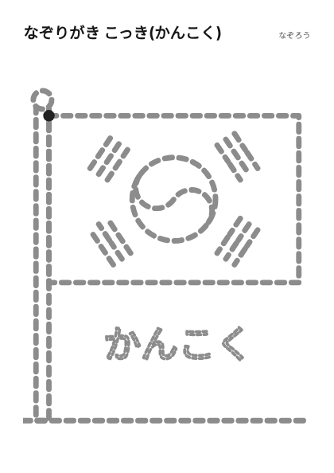

ホーム > なぞり・点つなぎ > なぞりがき こっき(アメリカ)
てんせんをなぞる・国旗
無料で使えますか?はい。このページのシートは、無料で印刷して使えます。登録もいりません。
どうやって印刷しますか?「このシートを印刷する(A4)」のボタンを押します。印刷画面で、用紙はA4、倍率は100%にします。
白黒のプリンターでも使えますか?使えます。色はモノクロで十分です。コピー用紙でも使えます。
同じシートを何枚も印刷してよいですか?はい。家庭・保育園・教室で、必要な枚数を印刷して使えます。再配布や販売はご遠慮ください。
紹介リンクを含みます(Amazonアソシエイト)。書名・著者・出版社・ISBNは書店や国立国会図書館の書誌情報で確認したものです。

← なぞり・点つなぎ の一覧にもどる